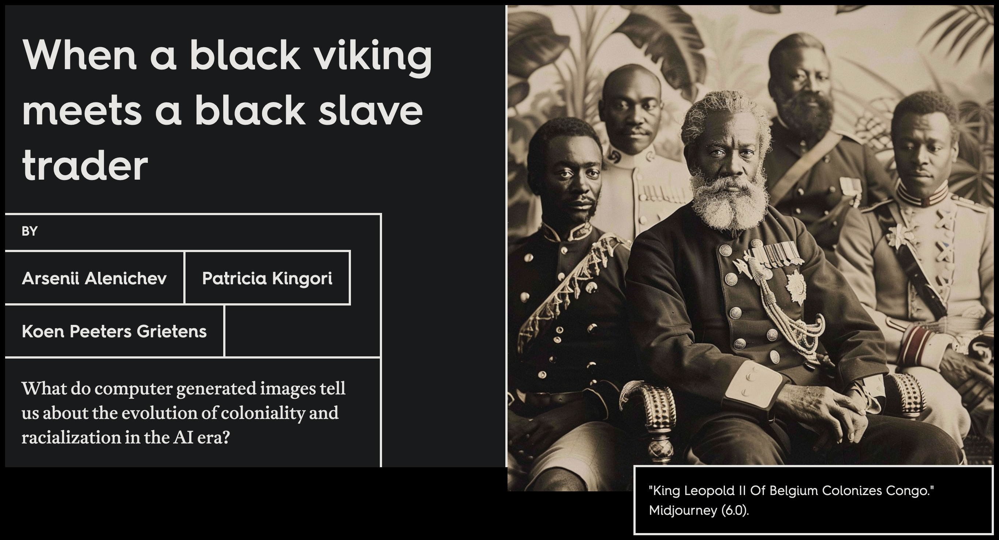
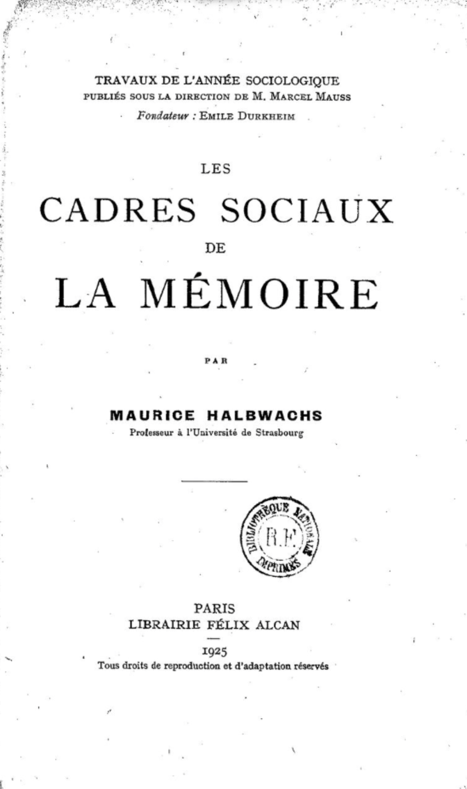

negotiating the past
frédéric clavert
14/05/2025
historical representations / artificial intelligence / collective memory
an attempt at a theoretical framework
medium of memory
a medium of memory “constructs versions of a past reality” and plays a role “in the encoding and decoding of that which is (to be) remembered.”
see: Erll, A. Memory in Culture, p. 120ff.
chatbots as medium of memory
chatbots and historical patterns
aligning the past

the latent space of the past
chatbots as frameworks

empirical approach
what is a reference to the past?
army of the european union invades budapest 2 0 2 2, highly detailed painting, digital painting, artstation, concept art
army of the european union fighting on the streets of budapest 2 0 2 2, highly detailed illustration for time magazine cover art
army of the european union with tanks fighting on the streets of budapest 2 0 2 2, highly detailed oil painting
prompting to find references to the past

Part III: Results Analysis
Key Findings: Historical References in Prompts
- Temporal distribution of historical references
- Common historical personas, events, and eras
- Stylistic patterns in historical prompts
- Historical accuracy vs. creative liberty
Conflicting Historical Narratives
knitr::include_graphics(“images/narrative-conflicts.png”)
User Negotiation Patterns
- Prompt refinement strategies
- Adjective use to guide historical tone
- Specificity vs. generality in historical requests
- “Historical” as stylistic marker
Case Study: European Historical References
knitr::include_graphics(“images/europe-history-network.png”)
Conclusion
GenAI platforms as a New Space for Historical Negotiation
- Comparing with traditional sites of historical consensus
- Public vs. private negotiation of historical understanding
- The role of algorithms in mediating historical perspectives
- Implications for collective memory formation
Future Research Directions
- Longitudinal analysis of historical prompts
- Cross-cultural comparisons of historical references
- Educational applications of prompt analysis
- Ethical considerations for AI-mediated historical understanding